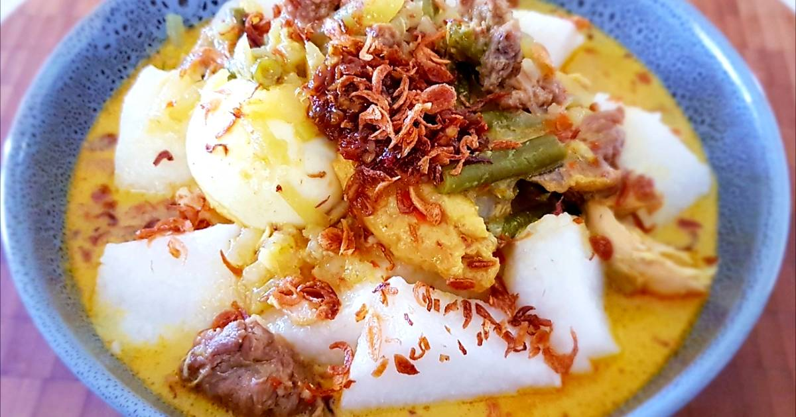

Lontong
How to make Lontong

Recipe originally from Asian Food Network
Ingredients
- 250g turnip peeled and cut into 5cm strips
- 400g chinese round cabbage
- 100g long beans cut diagonally into 5cm lengths
- 2 bay leaves
- 4 cloves garlic
- 4 shallots
- 1.5 stalk lemongrass sliced
- 0.5 slice galangal
- 150g ikan bilis soaked for 5 minutes
- 80g carrot peeled and sliced
- 1 tbsp ground coriander
- 500ml coconut milk
- 2 tbsp sambal chili oil
- 3 pcs tau kwa halved into triangles and deep fried
- 3 instant lontong (rice cakes) boiled and cubed
- 6 hard-boiled eggs halved
- 500 ml water
- oil for cooking
- palm sugar, salt, and sambal chili to taste
Instructions
- Blend and fry spice paste
- Blend garlic, onion, lemongrass, galangal and ikan bilis for the lontong paste into a smooth mixture. Add a little oil if the mixture is too dry
- In a deep pot, heat up 2½ tbsp oil and fry the lontong paste over medium heat for about 15 minutes, or until fragrant
- Add 1 tbsp ground coriander and ½ tbsp fish curry powder and bay leaves. Fry for another minute before pouring in the water and 2 tbsp sambal chili oil. Mix well and bring to boil
- Fry vegetable and simmer coconut gravy
- Add the vegetables and cook until softened. Reduce the cooking time if you prefer your vegetables to have a firm bite
- Season with sugar, salt and ikan bilis powder to taste. Add the coconut milk, stirring it in as you pour so it combines evenly. The mixture should thicken
- Turn off the heat when the mixture boils and add in the fried tau kwa
- Plate and serve. Pour the gravy over the rice cakes and eggs before topping with serunding and sambal. Serve hot.